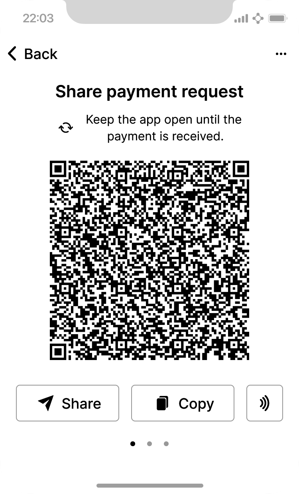
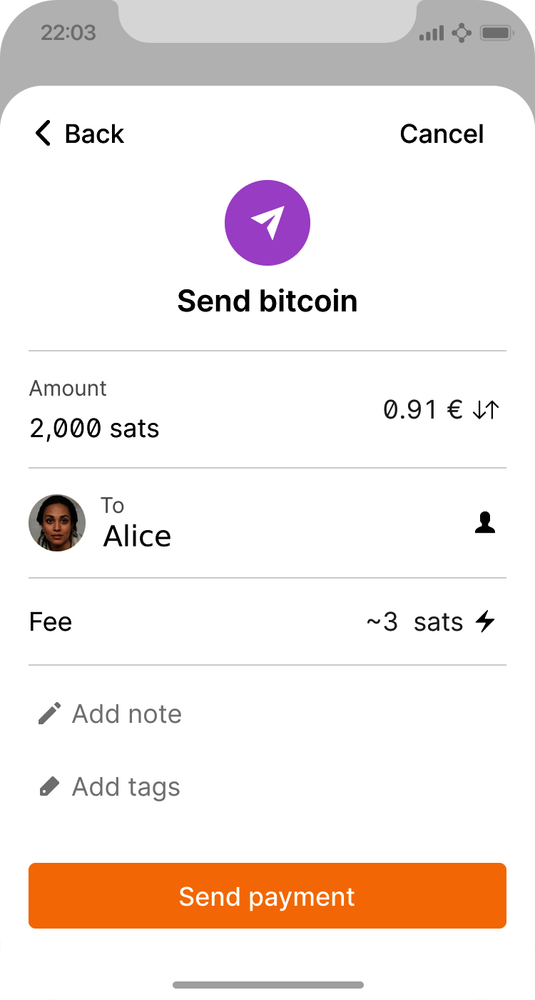

引论
Bitcoin是一系列概念与技术的集合，它们构成了一个数字货币生态系统的基础。这一系统中称为 bitcoin 的货币单位，被用于在 Bitcoin 网络的参与者之间存储和传递价值。Bitcoin 用户主要通过互联网，使用 Bitcoin 协议彼此通信，当然也可以使用其他传输网络。Bitcoin 协议栈以开源软件的形式提供，可以运行在多种计算设备上，包括笔记本电脑和智能手机，这使得该技术易于获取。
|
本书中，货币单位以小写 b 开头，写作 "bitcoin"； 而整个系统以大写 B 开头，写作 "Bitcoin"。 |
用户可以通过网络转移 bitcoin，去做几乎所有传统货币能做的事，包括购买和销售商品、向个人或组织汇款，或者发放信贷。bitcoin 可以在专门的货币交易所被买入、卖出，以及与其他货币兑换。可以说 Bitcoin 是互联网时代理想的货币形式，因为它快速、安全、无国界。
与传统货币不同，bitcoin 完全是虚拟的。它没有实体硬币，甚至没有单独的数字硬币。所谓的"币"，是隐含在把价值从付款方转移到收款方的交易之中的。Bitcoin 用户掌握密钥，凭借密钥证明自己对 Bitcoin 网络中某笔 bitcoin 的所有权。借助这些密钥，他们可以对交易签名，从而解锁价值并把它转移给新的所有者花掉。密钥通常存储在用户电脑或智能手机上的数字钱包里。能够对交易签名的密钥，是花费 bitcoin 的唯一前提条件，这把控制权完全交到每个用户手中。
Bitcoin 是一个分布式的、对等的系统。因此，它没有中央服务器，也没有可控制的中心点。bitcoin 的单位是通过一种称为"挖矿"（mining）的过程产生的，该过程包括反复执行一个引用最近 Bitcoin 交易列表的计算任务。Bitcoin 网络中的任何参与者都可以作为矿工，使用自己的计算设备帮助保护交易安全。平均每 10 分钟，就会有一位 Bitcoin 矿工能够为过去的交易增加安全性，并因此获得全新发行的 bitcoin 以及近期交易支付的手续费作为奖励。从本质上说，Bitcoin 挖矿把中央银行的货币发行与清算职能去中心化了，从而无需任何中央银行。
Bitcoin 协议内置了多种算法，用以在整个网络范围内调节挖矿功能。矿工必须执行的计算任务的难度会被动态调整，使得无论任意时刻有多少矿工（以及多少算力）在竞争，平均每 10 分钟都会有人成功。该协议还会周期性地降低新发行的 bitcoin 数量，把曾经发行的 bitcoin 总数限制在略低于 2100 万枚这一固定上限。其结果是，流通中的 bitcoin 数量紧密地遵循一条易于预测的曲线，剩余的 bitcoin 中每四年会有一半进入流通。大约在区块高度 1,411,200，预计出现在 2035 年前后，将来会存在的 bitcoin 中已有 99% 被发行出来。由于 Bitcoin 的发行速度不断减缓，从长期来看，bitcoin 这一货币是通缩的。此外，没有人能够强迫你接受任何超出预期发行速率而产生的 bitcoin。
在幕后，Bitcoin 也是一种协议的名称，一个对等网络，以及一项分布式计算领域的创新。Bitcoin 建立在数十年密码学和分布式系统研究的基础上，并以独特而强大的方式融合了至少四项关键创新。Bitcoin 包含：
-
一个去中心化的对等网络（Bitcoin 协议）
-
一份公开的交易账本（区块链）
-
一套用于独立验证交易和发行货币的规则（共识规则）
-
一种就有效区块链达成全局去中心化共识的机制（proof-of-work 算法）
作为一名开发者，我把 Bitcoin 看作类似于"货币的互联网"——一个通过分布式计算来传播价值并保障数字资产所有权的网络。Bitcoin 的内涵远比初看上去要丰富得多。
在本章中，我们将从解释一些主要的概念与术语入手，获取必要的软件，并使用 Bitcoin 进行简单的交易。在后续章节中，我们将逐层揭开使 Bitcoin 得以实现的技术，并深入考察 Bitcoin 网络与协议的内部机制。
Bitcoin 的历史
Bitcoin最早是在 2008 年通过发表一篇题为 "Bitcoin: A Peer-to-Peer Electronic Cash System"[1]的论文被描述出来的，该论文以 Satoshi Nakamoto 这一化名发表（参见 [satoshi_whitepaper]）。Nakamoto 将数字签名和 Hashcash 等若干已有的发明结合起来，创造出一个完全去中心化的电子现金系统，它不依赖任何中央权威来发行货币、结算和验证交易。一项关键创新，是使用一个分布式计算系统（称为 "proof-of-work" 算法）每 10 分钟左右进行一次全球性的"抽奖"，使去中心化的网络得以就交易的状态达成 共识。这优雅地解决了双花问题——即单一货币单位被花费两次的问题。在此之前，双花问题一直是数字货币的弱点，过去都是通过将所有交易交由中央清算所处理来解决的。
Bitcoin 网络于 2009 年启动，其基础是 Nakamoto 发布的一份参考实现，此后该实现又经过许多其他程序员的修订。运行为 Bitcoin 提供安全性与韧性的 proof-of-work 算法（即挖矿）的机器，其数量与算力都呈指数级增长，目前它们合在一起的计算能力，已经超过了世界上顶尖超级计算机算力的总和。
Satoshi Nakamoto 于 2011 年 4 月退出公众视野，将开发代码和维护网络的责任交给了一群充满活力的志愿者。Bitcoin 背后的人或团体的身份至今仍是未知的。然而，无论是 Satoshi Nakamoto 还是其他任何人，都未能对 Bitcoin 系统实施个人控制——它的运作基于完全透明的数学原理、开源代码以及参与者之间的共识。这项发明本身具有开创性，已经在分布式计算、经济学和计量经济学等领域催生了新的科学研究。
入门
Bitcoin 是一种协议，可以通过支持该协议的应用程序来访问它。"Bitcoin 钱包"是 Bitcoin 系统最常见的用户界面，正如 web 浏览器是 HTTP 协议最常见的用户界面一样。Bitcoin 钱包有许多实现和品牌，正如 web 浏览器也有许多品牌（例如 Chrome、Safari 和 Firefox）。 而且就像我们都有自己偏爱的浏览器一样，Bitcoin 钱包在质量、性能、安全性、隐私性和可靠性方面也各不相同。还有一个 Bitcoin 协议的参考实现，它包含一个钱包，称为 "Bitcoin Core"，源自 Satoshi Nakamoto 编写的原始实现。
选择 Bitcoin 钱包
Bitcoin 钱包是 Bitcoin 生态系统中开发最活跃的应用程序之一。竞争非常激烈，可能此时此刻就有一款新的钱包正在被开发，而去年的几款钱包可能已经无人维护。许多钱包专注于特定平台或特定用途，有些更适合新手，另一些则为高级用户提供了丰富的功能。选择钱包是一件高度主观的事情，取决于具体用途和用户的经验水平。因此，推荐某个特定品牌或钱包是没有意义的。不过，我们可以按照平台和功能对 Bitcoin 钱包进行分类，并对存在的各种钱包类型作一些说明。建议你尝试几款不同的钱包，直到找到适合自己需求的那一款。
Bitcoin 钱包的类型
Bitcoin 钱包按平台可分为以下几类：
- 桌面钱包
-
桌面钱包是作为参考实现而创建的第一类 Bitcoin 钱包。许多用户运行桌面钱包是为了获得它所提供的功能、自主性和控制力。然而，运行在 Windows 和 macOS 等通用操作系统上有一定的安全劣势，因为这些平台往往不够安全，配置也比较粗放。
- 移动钱包
-
移动钱包是最常见的 Bitcoin 钱包类型。它们运行在 Apple iOS 和 Android 等智能手机操作系统上，对于新用户来说通常是不错的选择。许多移动钱包以简单易用为设计目标，但也有面向高级用户的功能完备的移动钱包。为了避免下载和存储大量数据，大多数移动钱包从远程服务器获取信息，这会将你的 Bitcoin 地址和余额信息暴露给第三方，从而降低你的隐私性。
- Web 钱包
-
Web 钱包通过 web 浏览器访问，并将用户的钱包存储在第三方拥有的服务器上。这类似于网页邮箱，完全依赖第三方服务器。其中有些服务使用运行在用户浏览器中的客户端代码，由用户掌控 Bitcoin 密钥，但用户对服务器的依赖仍会损害其隐私。然而，大多数服务则会以易用性为交换，从用户手中接管 Bitcoin 密钥的控制权。不建议在第三方系统中存储大量 bitcoin。
- 硬件签名设备
-
硬件签名设备是一种通过专用硬件和固件来存储密钥并对交易签名的设备。它们通常通过 USB 线、近场通信（NFC）或带二维码的相机连接到桌面、移动或 web 钱包。由于所有与 Bitcoin 相关的操作都在专用硬件上完成，这类钱包对多种攻击具有更强的防御能力。硬件签名设备有时被称为 "hardware wallets"，但它们需要与一个功能完备的钱包配对，才能发送和接收交易；而该配对钱包所提供的安全性和隐私性，对用户使用硬件签名设备时获得的安全性和隐私性起着关键作用。
全节点 vs. 轻量级
对 Bitcoin 钱包进行分类的另一种方式，是看它们的自治程度以及它们如何与 Bitcoin 网络交互：
- 全节点
-
全节点是一种程序，它验证 Bitcoin 全部交易历史（即每位用户曾经的每一笔交易）。可选地，全节点也可以存储之前验证过的交易，并向其他 Bitcoin 程序（无论是同一台计算机上还是通过互联网）提供数据。全节点会消耗相当多的计算机资源——大致相当于每天为一天的 Bitcoin 交易观看一个小时的流媒体视频——但作为回报，全节点为用户提供了完整的自治权。
- 轻量级客户端
-
轻量级客户端，也称为简化支付验证（simplified-payment-verification, SPV）客户端，它连接到一个全节点或其他远程服务器以接收和发送 Bitcoin 交易信息，但在本地存储用户的钱包，对接收到的交易进行部分验证，并独立地构造对外发送的交易。
- 第三方 API 客户端
-
第三方 API 客户端是一种通过第三方 API 系统与 Bitcoin 交互的客户端，而不是直接连接到 Bitcoin 网络。钱包可能由用户保存，也可能保存在第三方服务器上，但客户端信任远程服务器为其提供准确的信息并保护其隐私。
|
Bitcoin是一个对等（P2P）网络。全节点是其中的 对等节点（peers）： 每个对等节点独立验证每一笔已确认的交易，并以完全的权威向其用户提供数据。轻量级钱包和其他软件则是 客户端（clients）：每个客户端都依赖一个或多个对等节点为其提供有效数据。Bitcoin 客户端可以对接收到的部分数据执行二次验证，并连接多个对等节点以降低对单个对等节点完整性的依赖，但客户端的安全性最终仍依赖于其对等节点的完整性。 |
由谁控制密钥
一个非常重要的额外考虑因素是：谁控制密钥。 正如我们将在后续章节看到的，对 bitcoin 的访问由"私钥"控制，私钥就像非常长的 PIN 码。如果只有你自己控制这些私钥，那么你就掌控着自己的 bitcoin。反之，如果你不掌握控制权，那么你的 bitcoin 就是由代你管理资金的第三方掌控的。基于控制权的不同，密钥管理软件分为两个重要类别：由你自己控制密钥的 钱包，以及托管方掌控密钥的资金与账户。为了强调这一点，我（Andreas）创造了这样一句话：Your keys, your coins. Not your keys, not your coins（你的密钥，你的币；不是你的密钥，就不是你的币）。
结合上述分类，许多 Bitcoin 钱包可以归入几个组别，其中最常见的三类是：桌面全节点（你控制密钥）、移动轻量级钱包（你控制密钥）以及基于 web 的第三方账户（你不控制密钥）。不同类别之间的界限有时是模糊的，因为软件可以运行在多个平台上，并以不同方式与网络交互。
快速上手
Alice 并不是一个技术型用户，最近才从朋友 Joe 那里听说 Bitcoin。在一次聚会上，Joe 正热情地向身边的每个人讲解 Bitcoin，并主动提出演示一下。Alice 被吸引了，于是问她该如何开始使用 Bitcoin。Joe 说移动钱包最适合新用户，并推荐了几款他喜欢的钱包。Alice 下载了其中一款 Joe 推荐的钱包，并把它装到了自己的手机上。
当 Alice 第一次运行她的钱包应用时，她选择了创建一个新的 Bitcoin 钱包。由于她选择的是非托管钱包，Alice（且只有 Alice）将掌握她的密钥。因此，她需要对密钥的备份负责，因为丢失密钥就意味着丧失对她那些 bitcoin 的访问权限。为此，她的钱包生成了一个 恢复码（recovery code），可用于恢复她的钱包。
恢复码
大多数现代非托管 Bitcoin 钱包都会为用户提供一个恢复码以便备份。恢复码通常由软件随机选择的数字、字母或单词组成，并作为钱包生成的密钥的基础。示例见 [recovery_code_sample]。
| 钱包 | 恢复码 |
|---|---|
BlueWallet |
(1) media (2) suspect (3) effort (4) dish (5) album (6) shaft (7) price (8) junk (9) pizza (10) situate (11) oyster (12) rib |
Electrum |
nephew dog crane clever quantum crazy purse traffic repeat fruit old clutch |
Muun |
LAFV TZUN V27E NU4D WPF4 BRJ4 ELLP BNFL |
|
恢复码有时被称为 "mnemonic"（助记词）或 "mnemonic phrase"（助记词短语）， 这意味着你应该把短语记住，但把短语写在纸上其实比依赖大多数人的记忆更省力，也更可靠。它的另一个别名是 "seed phrase"（种子短语）， 因为它为生成钱包所有密钥的函数提供了输入（即"种子"）。 |
如果 Alice 的钱包出了什么问题，她可以下载一份新的钱包软件，输入这个恢复码，从而重建钱包数据库，恢复她曾经发送或接收的所有 onchain（链上）交易记录。 然而，从恢复码恢复并不会自动还原 Alice 在钱包中输入的额外数据，例如她为某些地址或交易关联的标签。尽管丧失这些元数据不像丧失资金那样要紧，但它仍然以自己的方式有其重要性。设想你需要查阅一份旧的银行或信用卡对账单，而其中每一个你支付过（或付款给你）的实体名称都被涂黑了。为防止丢失元数据，许多钱包除了恢复码之外还提供额外的备份功能。
对于某些钱包而言，这一额外的备份功能在今天甚至比过去更重要。许多 Bitcoin 支付现在使用offchain（链下）技术进行，并非每一笔支付都存储在公开的区块链中。除了其他好处之外，这降低了用户成本并提高了隐私性，但这也意味着，像恢复码这种依赖于链上数据的机制并不能保证恢复用户的所有 bitcoin。对于支持链下技术的应用，定期备份钱包数据库就显得很重要。
值得注意的是，许多钱包在首次接收资金到一个新的移动钱包时，往往会重新核验你是否已经安全备份了恢复码。这种核验方式从简单的弹窗提示，到要求用户手动重新输入恢复码，各有不同。
|
尽管许多合法钱包都会提示你重新输入恢复码，但也有许多恶意软件应用程序伪装成钱包的样子，要求你输入恢复码，然后将你输入的内容转发给恶意软件开发者，从而盗走你的资金。这相当于试图骗你交出银行密码的钓鱼网站。对于大多数钱包应用而言，它们只会在以下两种情况下要求你输入恢复码：初次设置时（在你收到任何 bitcoin 之前），以及恢复钱包时（在你丧失对原始钱包的访问之后）。如果应用在其他任何时候要求你输入恢复码，请咨询专家以确保你没有遭到钓鱼攻击。 |
Bitcoin 地址
Alice现在已经准备好开始使用她的新 Bitcoin 钱包了。她的钱包应用随机生成了一个私钥（在 [private_keys] 中有更详细的描述），将用于派生指向她钱包的 Bitcoin 地址。此时，她的 Bitcoin 地址对 Bitcoin 网络来说尚不为人知，也未在 Bitcoin 系统的任何部分"注册"。她的 Bitcoin 地址只是与她的私钥对应的数字，她可以用它们来控制对资金的访问。这些地址是由她的钱包独立生成的，没有引用任何服务，也没有向任何服务注册。
|
Bitcoin 地址和发票格式有多种。地址和发票可以与其他 Bitcoin 用户共享，他们可以用它直接向你的钱包发送 bitcoin。你可以与他人共享地址或发票，而不必担心 bitcoin 的安全性。与银行账号不同，知道你某个 Bitcoin 地址的人无法从你的钱包中取走资金——所有的花费都必须由你发起。然而，如果你把同一个地址给了两个人，他们就能看到对方向你发送了多少 bitcoin。如果你把地址公开发布，那么所有人都能看到其他人向那个地址发送了多少 bitcoin。为保护你的隐私，每次请求付款时，你都应当生成一个使用新地址的新发票。 |
接收 Bitcoin
Alice使用 Receive（接收）按钮，它会显示一个二维码，如 Alice 在她的移动 Bitcoin 钱包中使用接收界面，以二维码格式显示她的地址。 所示。

二维码是那个由黑白点构成图案的方块，它就像一种条形码，以可以被 Joe 的智能手机相机扫描的格式包含相同的信息。
|
发送到本书中地址的任何资金都将丢失。如果你想测试发送 bitcoin，请考虑将其捐赠给接受 bitcoin 的慈善机构。 |
获取你的第一笔 Bitcoin
新用户的首要任务是获取一些 bitcoin。
Bitcoin 交易是不可逆的。大多数电子支付网络——例如信用卡、借记卡、PayPal 以及银行账户转账——都是可逆的。对于出售 bitcoin 的人来说，这一差异带来了非常高的风险：买方在收到 bitcoin 之后可能撤销电子支付，从而对卖方实施欺诈。为了降低这种风险，接受传统电子支付以换取 bitcoin 的公司，通常会要求买家进行身份核验和信用审查，这可能需要几天到几周时间。对新用户而言，这意味着你无法立即用信用卡买到 bitcoin。不过，只要稍有耐心，并发挥一点创造性思维，你其实并不需要这么做。
下面是一些新用户获取 bitcoin 的方法：
-
找一位持有 bitcoin 的朋友，直接从他/她那里买一些。许多 Bitcoin 用户都是这样起步的。这种方式最简单。结识持有 bitcoin 的人的一种途径，是参加在 Meetup.com 上列出的本地 Bitcoin 线下聚会。
-
通过出售商品或服务来赚取 bitcoin。如果你是程序员，可以出售你的编程技能。如果你是理发师，可以为 bitcoin 剪头发。
-
使用你所在城市的 Bitcoin ATM。Bitcoin ATM 是一种接受现金并将 bitcoin 发送到你智能手机 Bitcoin 钱包的机器。
-
使用与你的银行账户绑定的 Bitcoin 货币交易所。如今许多国家都有货币交易所，为买卖双方提供使用本地法币兑换 bitcoin 的市场。汇率行情服务（例如 BitcoinAverage）通常会列出针对各种货币的 Bitcoin 交易所清单。
|
相对于其他支付系统，Bitcoin 的一个优点是：在正确使用时，它能为用户提供更多的隐私。获取、持有和花费 bitcoin 并不要求你向第三方披露敏感的、可识别个人身份的信息。然而，凡是 Bitcoin 与传统系统发生接触的地方，例如货币交易所，国内外法规通常都会适用。为了将 bitcoin 兑换成你所在国家的法币，你通常需要提供身份证明和银行信息。用户应当意识到，一旦某个 Bitcoin 地址被关联到一个身份，与之相关的其他 Bitcoin 交易也可能变得容易被识别和追踪——包括更早之前发生的交易。这是为什么许多用户选择保留独立于个人钱包之外的专门交易所账户的原因之一。 |
Alice 是通过朋友介绍接触到 Bitcoin 的，因此她有一条便捷的途径来获取她的第一笔 bitcoin。接下来，我们将看看她如何从朋友 Joe 那里购买 bitcoin，以及 Joe 是如何把 bitcoin 发送到她钱包的。
查询 Bitcoin 的当前价格
在Alice 能从 Joe 那里买入 bitcoin 之前，他们需要先就 bitcoin 与美元之间的 汇率 达成一致。这就引出了 Bitcoin 新手常问的一个问题："谁来设定 bitcoin 的价格？"简短的回答是：价格由市场决定。
像大多数其他货币一样，Bitcoin 实行 浮动汇率。也就是说，bitcoin 的价值会根据它所交易的各个市场上的供求关系而波动。比如，bitcoin 以美元计价的"价格"，是在每个市场上基于最近一笔 bitcoin 与美元的成交计算出来的。因此，价格往往每秒钟都会发生细微波动。一项价格服务会聚合多个市场的价格，并计算一个成交量加权平均值，用以代表某一货币对（例如 BTC/USD）在整体市场上的汇率。
有数百种应用和网站可以提供当前市场行情。下面是其中几种最受欢迎的：
- Bitcoin Average
-
一个对每种货币提供简洁的成交量加权平均价视图的网站。
- CoinCap
-
一项列出包括 bitcoin 在内的数百种加密货币的市值与汇率的服务。
- Chicago Mercantile Exchange Bitcoin Reference Rate
-
一种可用作机构和合约参考的参考利率，由 CME 作为其投资数据源的一部分提供。
除了这些各式各样的网站和应用之外，一些 Bitcoin 钱包还会自动在 bitcoin 与其他货币之间进行金额换算。
发送与接收 Bitcoin
Alice决定购买 0.001 个 bitcoin。她和 Joe 核对了汇率之后，她递给 Joe 相应金额的现金，然后打开自己的移动钱包应用并选择 Receive（接收）。这会显示一个包含 Alice 第一个 Bitcoin 地址的二维码。
接着 Joe 在自己的智能手机钱包上选择 Send（发送），并打开二维码扫描器。这样 Joe 就可以用智能手机的相机扫描该条形码，不必手动输入 Alice 那串很长的 Bitcoin 地址。
现在 Joe 已经把 Alice 的 Bitcoin 地址设为收款人。Joe 输入金额为 0.001 个 bitcoin（BTC），参见 Bitcoin 钱包发送界面。。某些钱包可能会用不同的单位显示金额：0.001 BTC 等于 1 毫比特币（millibitcoin, mBTC），或 100,000 satoshi（sat）。
某些钱包可能还会建议 Joe 为这笔交易输入一个标签；如果是这样，Joe 就输入 "Alice"。几周或几个月之后，这能帮助 Joe 记起他当初为什么发送了这 0.001 个 bitcoin。某些钱包可能还会就手续费向 Joe 给出提示。根据钱包种类以及交易的发送方式，钱包可能会要求 Joe 输入一个交易费率，或者给出建议手续费（或费率）的提示。手续费越高，交易确认越快（参见 确认）。

接着 Joe 仔细检查自己是否输入了正确的金额，因为他马上要把钱发出去，而错误很快就会变得不可逆。在再次核对地址和金额后，他按下 Send 来广播这笔交易。Joe 的移动 Bitcoin 钱包会构造一笔交易，把 0.001 BTC 分配给 Alice 提供的地址，资金来源于 Joe 的钱包，并使用 Joe 的私钥对该交易签名。这告诉 Bitcoin 网络：Joe 已授权向 Alice 的新地址转移价值。当这笔交易通过对等协议广播出去后，它会迅速在 Bitcoin 网络中扩散。只需几秒钟，网络中大多数连接良好的节点都会收到这笔交易，并第一次看到 Alice 的地址。
与此同时，Alice 的钱包正在不断"监听" Bitcoin 网络上的新交易，寻找任何与它所包含的地址相匹配的交易。Joe 的钱包广播这笔交易之后没过几秒，Alice 的钱包就会显示它正在收到 0.001 BTC。
Alice 现在自豪地拥有了 0.001 BTC，并且可以花掉它们。在接下来的几天里，Alice 又通过 ATM 和一家交易所购买了更多的 bitcoin。在下一章中，我们将看看她用 Bitcoin 进行的第一笔购买，并更详细地考察底层的交易和传播技术。